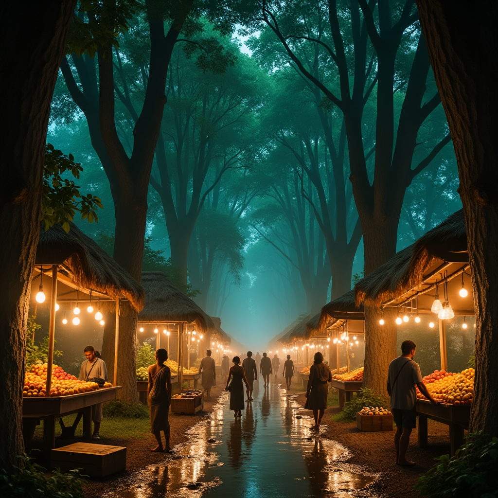
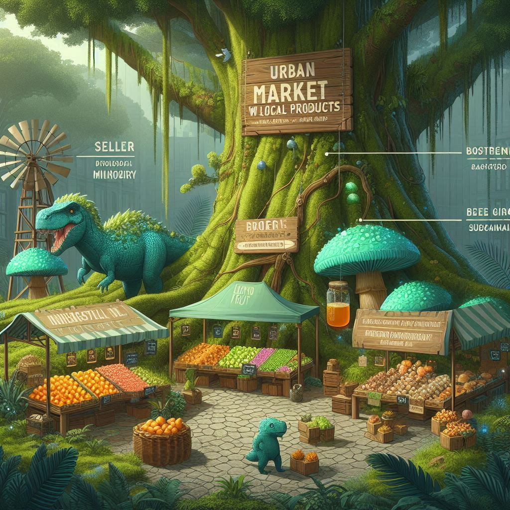

Promovendo uma conexão ética e sustentável entre o campo e a cidade

O que é Comércio Justo?
O comércio justo é uma abordagem ética de mercado que busca promover condições mais equilibradas e humanas para os produtores, especialmente os pequenos agricultores. Esse modelo preza pela transparência nas relações comerciais, respeito aos direitos humanos e ambientais, e remuneração justa para quem está na base da cadeia produtiva.
Importância para o Campo
Para as comunidades rurais, o comércio justo representa mais do que renda: é uma forma de reconhecimento, valorização da cultura local e incentivo à produção sustentável. Ele fortalece cooperativas, promove práticas agrícolas responsáveis e reduz a dependência de atravessadores.

Impacto na Cidade
Para quem vive nas cidades, consumir produtos de comércio justo é uma maneira de contribuir com uma cadeia produtiva mais ética. Além de garantir qualidade e procedência dos alimentos, esse consumo consciente aproxima o cidadão urbano da realidade rural, promovendo empatia e colaboração.
Como Apoiar?
Apoiar o comércio justo começa com escolhas cotidianas: dar preferência a feiras orgânicas, comprar diretamente de produtores locais, valorizar produtos certificados e fomentar iniciativas que promovam o desenvolvimento humano e ambiental em toda a cadeia produtiva.